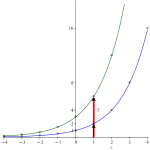
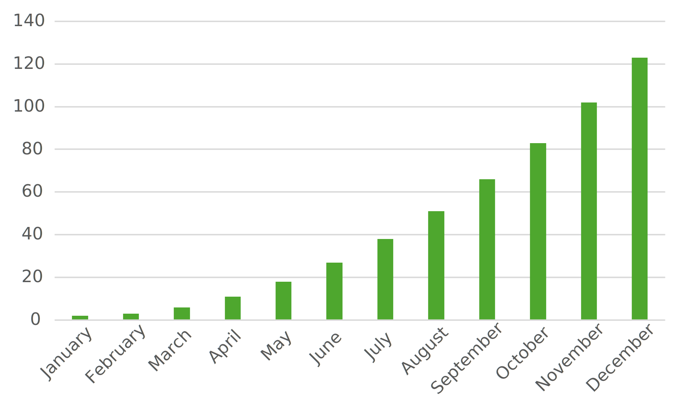
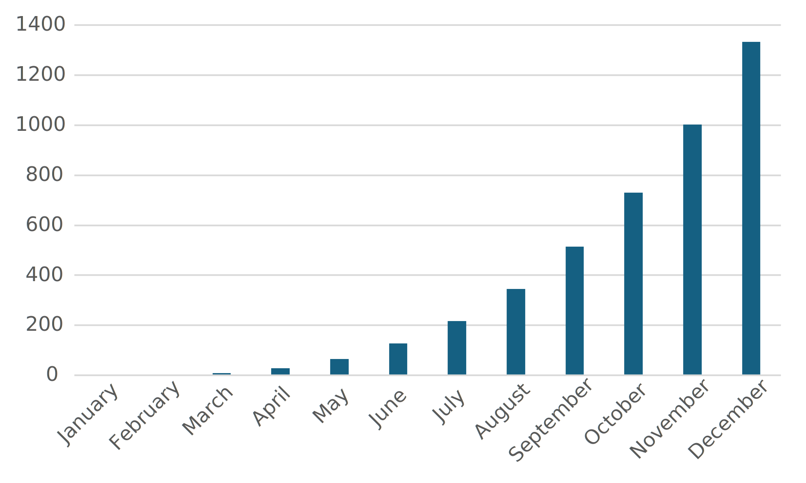

Communicate results in mathematical notation and in language appropriate to the technical field
This section covers the following mathematical concepts.
Identify rates as linear, quadratic, exponential, or other (critical thinking)
Identify data varrying directly or indirectly (critical thinking)
We have learned how to identify exponential data (Section3.4) and have learned to work with some exponential applications (Section6.1). This section presents the graph (shape) of exponentials and emphasizes two traits of exponential models.
Because devices can quickly produce accurate graphs for us, it is not the goal of this section to help you become proficiant at sketching graphs. Rather, it is the goal for you to be able to read a model, and recognize what different parts of the model imply, because you know what it would look like.
Subsection6.2.1Shape of Exponentials
In order to understand the graph of an exponential function we are going to graph one that is not limited by interpretation or rounding.
Example6.2.1.
Graph \(y=2^x\text{.}\)
First we will generate a table of points with which to start.
\(x\)
\(2^x\)
\(-4\)
\(2^{-4}=\frac{1}{2^4}\)
\(=\frac{1}{16}\)
\(-3\)
\(2^{-3}=\frac{1}{2^3}\)
\(=\frac{1}{8}\)
\(-2\)
\(2^{-2}=\frac{1}{2^2}\)
\(=\frac{1}{4}\)
\(-1\)
\(2^{-1}=\frac{1}{2^1}\)
\(=\frac{1}{2}\)
\(0\)
\(2^0\)
\(=1\)
\(1\)
\(2^1\)
\(=2\)
\(2\)
\(2^2\)
\(=4\)
\(3\)
\(2^3\)
\(=8\)
\(4\)
\(2^4\)
\(=16\)
We can plot these points then sketch a curve smoothly through the points.
Starting at \(x=0\) consider the curve as it extends to the right. We can use the analogy of walking up hill to understand this curve. At \(x=0\) we are walking up hill so we are a little slower than on a flat surface. At \(x=1\) the height has doubled but so also has the slope (remember the differences are a multiple of the height). Walking the next segment will be more strenuous. At \(x=2\) the height has doubled again, so also has the steepness. Now it is too steep to walk. We will need to scramble or use climbing equipment. Generally an exponential curve becomes increasingly steep.
Starting back at \(x=0\) again consider the curve as it extends to the left. We can see that we are walking downhill; we might pick up a little speed. At \(x=-1\) it continues downhill to the left but it is not enough to help us maintain a faster speed. At \(x=-2\) we can no longer see the downhill (too gentle) though we would notice it if we were on a bike or skateboard. Just as the curve becomes twice as high and also twice as steep as we move the to right, it becomes half as high and half as steep as we go to the left. The inability to see the downhill nature illustrates that the exponential to the left begins to look like a horizontal line.
Lets clarify that last statement. We notice that all values (left and right) are positive. So to the left the curve is going down, but it never crosses zero. It must therefore become increasingly close to zero. This is why it begins to look like a line namely \(x=0\text{.}\) When one curve becomes increasingly like another we call that second curve (the line \(x=0\) in this case) an asymptote.
This decrease to the left can be understood in contexts as well.
Example6.2.2.
In Checkpoint6.1.16 we determined that the amount of bacteria was modeled by
\begin{equation*}
b = 30(2^{t/25})\text{.}
\end{equation*}
Initially (\(t=0\)) there are 30 g of bacteria. Now we will calculate how much bacteria there was before this initial measurement.
Time
Mass of Bacteria
\(0\)
\(30(2^{0/25})\)
\(=30 \cdot 1\)
\(=30\)
\(-25\)
\(30(2^{-25/25})\)
\(=30 \cdot \frac{1}{2}\)
\(=15\)
\(-50\)
\(30(2^{-50/25})\)
\(=30 \cdot \frac{1}{4}\)
\(=15\)
\(-75\)
\(30(2^{-75/25})\)
\(=30 \cdot \frac{1}{8}\)
\(=7.5\)
\(-100\)
\(30(2^{-100/25})\)
\(=30 \cdot \frac{1}{16}\)
\(=3.75\)
We notice that the amount of bacteria decreases. More specifically we see that it is divided in half each time. This is just the reverse of it doubling each time as it grows.
We also notice that because each previous entry is half of the next, there is always some left. No matter how far back in time we go, there will always be some. This is part of all exponentials: rapid growth in one direction and an increasingly gentle decrease toward some amount (zero in this case) in the other direction.
The model measures the bacteria by weight in grams. This can always be cut in half. What reality constraint should we put on this model?
Not all exponential curves increase to the right and decrease to the left. Some reverse (mirror) this pattern. The following example uses radioactive decay as an example of this.
Example6.2.3.
Uranium-242 has a half-life of 16.8 minutes. Suppose we begin with \(13\bar{0}\) g of uranium-242.
(a)
How much is left at times 16.8, 33.6, and 50.4 minutes?
At time 0 we have \(13\bar{0}\) g. At time 16.8 it will be half of the original which is \(65.0\) g. The 1/2 is an exact number so 3 significant digits is maintained. At time 33.6 it will be reduced by half again (\(33.6 = 18.8 \cdot 2\text{,}\) 2nd half-life). Thus there will be \(\frac{65.0}{2} \approx 32.5\) g. At time 50.4 it will be reduced by half a third time (\(50.4 = 16.8 \cdot 3\)), so the amount remaining will be \(\frac{32.5}{2} \approx 16.3\) g.
(b)
Write a model for this decay.
We can use the process from Subsection6.1.2. The time in minutes is divided by the half-life 16.8 minutes. Because this is reducing by half the scale is \(\frac{1}{2}\text{.}\)
\begin{equation*}
A = 13\bar{0}\left(\frac{1}{2}\right)^{t/16.8}
\end{equation*}
(c)
Graph this model.
We can use the points from the first task and the method from Example6.2.1 to produce a graph.
Notice the gentle decrease toward zero is to the right this time as opposed to the left in Example6.2.1. That is because we are cutting in half each time instead of doubling.
The following video illustrates the connection between a fixed time (half-life) and decreasing by a ratio (1/2).
Figure6.2.4.Geometric Illustration of Half-Life
Subsection6.2.2Transforming Exponential Functions
In Section5.4 we learned how to shift and stretch parabolas (graphs of quadratics). Those same transformations work on exponentials (and any other function). The following examples illustrate that the effects are the same.
Example6.2.5.Translate an Exponential.
Graph \(y=2^x+3\) using the graph and table in Example6.2.1. We can extend the table to include the \(+3\text{.}\)
\(x\)
\(2^x\)
\(2^x+3\)
\(-4\)
\(\frac{1}{16}\)
\(3+\frac{1}{16}\)
\(-3\)
\(\frac{1}{8}\)
\(3+\frac{1}{8}\)
\(-2\)
\(\frac{1}{4}\)
\(3+\frac{1}{4}\)
\(-1\)
\(\frac{1}{2}\)
\(3+\frac{1}{2}\)
\(0\)
\(1\)
\(1+3=\)
\(4\)
\(1\)
\(2\)
\(2+3=\)
\(5\)
\(2\)
\(4\)
\(4+3=\)
\(7\)
\(3\)
\(8\)
\(8+3=\)
\(11\)
\(4\)
\(16\)
\(16+3=\)
\(19\)
Notice that every point is 3 units higher than the point in the original graph. We have moved the graph 3 units up.
Example6.2.6.Stretch an Exponential.
Graph \(y=3(2^x)\) using the graph and table in Example6.2.1. We can extend the table to include the \(3 \cdot\text{.}\)
\(x\)
\(2^x\)
\(3(2^x)\)
\(-4\)
\(\frac{1}{16}\)
\(3 \cdot \frac{1}{16} =\)
\(\frac{3}{16}\)
\(-3\)
\(\frac{1}{8}\)
\(3 \cdot \frac{1}{8} =\)
\(\frac{3}{8}\)
\(-2\)
\(\frac{1}{4}\)
\(3 \cdot \frac{1}{4} =\)
\(\frac{3}{4}\)
\(-1\)
\(\frac{1}{2}\)
\(3 \cdot \frac{1}{2} =\)
\(\frac{3}{2}\)
\(0\)
\(1\)
\(3 \cdot 1 =\)
\(3\)
\(1\)
\(2\)
\(3 \cdot 2 =\)
\(6\)
\(2\)
\(4\)
\(3 \cdot 4 =\)
\(12\)
\(3\)
\(8\)
\(3 \cdot 8 =\)
\(24\)
\(4\)
\(16\)
\(3 \cdot 16 =\)
\(48\)

Notice that every point is 3 times farther from the x-axis. This makes it 3 times steeper.
Example6.2.7.Reflect an Exponential.
Graph \(y=2^{-x}\) using the graph and table in Example6.2.1. We can extend the table to include the \(-x\text{.}\)
\(x\)
\(2^x\)
\(-x\)
\(2^{-x}\)
\(-4\)
\(2^{-4}=\frac{1}{2^4}=\)
\(\frac{1}{16}\)
\(-(-4)=4\)
\(2^{-(-4)}=2^4=\)
\(16\)
\(-3\)
\(2^{-3}=\frac{1}{2^3}=\)
\(\frac{1}{8}\)
\(-(-3)=3\)
\(2^{-(-3)}=2^3=\)
\(8\)
\(-2\)
\(2^{-2}=\frac{1}{2^2}=\)
\(\frac{1}{4}\)
\(-(-2)=2\)
\(2^{-(-2)}=2^2=\)
\(4\)
\(-1\)
\(2^{-1}=\frac{1}{2^1}=\)
\(\frac{1}{2}\)
\(-(-1)=1\)
\(2^{-(-1)}=2^1=\)
\(2\)
\(0\)
\(2^{0}=\)
\(1\)
\(-(0)=0\)
\(2^{-(0)}=2^0=\)
\(1\)
\(1\)
\(2^1=\)
\(2\)
\(-(1)=-1\)
\(2^{-(1)}=2^{-1}=\)
\(\frac{1}{2}\)
\(2\)
\(2^2=\)
\(4\)
\(-(2)=-2\)
\(2^{-(2)}=2^{-2}=\)
\(\frac{1}{4}\)
\(3\)
\(2^3=\)
\(8\)
\(-(3)=-3\)
\(2^{-(3)}=2^{-3}=\)
\(\frac{1}{8}\)
\(4\)
\(2^4=\)
\(16\)
\(-(4)=-4\)
\(2^{-(4)}=2^{-4}=\)
\(\frac{1}{16}\)
Notice that every point end up on the other side of the y-axis. This is a reflection of the original curve.
Example6.2.8.Reflect an Exponential.
Graph \(y=2^{0.25x}\) using the graph and table in Example6.2.1. We can extend the table to include the \(0.25x\text{.}\) Because this changes the x value, we will need a different set of inputs. Look at the result to understand why we selected them.
\(x\)
\(0.25x\)
\(2^{0.25x}\)
\(-16\)
\(0.25(-16)=\)
\(-4\)
\(2^{-4}=\frac{1}{2^4}=\)
\(\frac{1}{16}\)
\(-12\)
\(0.25(-12)=\)
\(-3\)
\(2^{-3}=\frac{1}{2^3}=\)
\(\frac{1}{8}\)
\(-8\)
\(0.25(-8)=\)
\(-2\)
\(2^{-2}=\frac{1}{2^2}=\)
\(\frac{1}{4}\)
\(-4\)
\(0.25(-4)=\)
\(-1\)
\(2^{-1}=\frac{1}{2^1}=\)
\(\frac{1}{2}\)
\(0\)
\(0.25(0)=\)
\(0\)
\(2^0=\)
\(1\)
\(4\)
\(0.25(4)=\)
\(1\)
\(2^1=\)
\(2\)
\(8\)
\(0.25(8)=\)
\(2\)
\(2^2=\)
\(2\)
\(12\)
\(0.25(12)=\)
\(3\)
\(2^3=\)
\(8\)
\(16\)
\(0.25(16)=\)
\(4\)
\(2^4=\)
\(16\)
We ended up with the same y values, but they occurred spread out over a wider area. Multiplying stretched the curve horizontally. Because the number is between 0 and 1 (small fraction) it stretched it out (we could squeeze it in).
Now that we know how each piece affects the result we can put them all together. The first two examples start by using each of these individually and end with a shorter method. The third example illustrates using the shorter method that we typically use.
Example6.2.9.
Graph the model \(7.000 \cdot 2^{-t/10.551}\) from Example6.1.14. In order to match our examples above we can express the exponent as \(7.000 \cdot 2^{-0.094778t}\text{.}\) We simply calculated \(1/10.551\) and maintained 5 significant digits.
First, we identify the changes from \(y=2^x\text{.}\) The 7.000 in front is a vertical stretch. The negative in the exponent is a reflection over the y-axis. The coefficient of the exponent is a horizontal stretch. We can make these changes in order of operation: horizontal stretch, reflection, vertical stretch. These are shown in the graph below. Graph A is the original. B shows the horizontal stretch. C shows the reflection. D adds the vertical stretch. The labels are located to show how one point is transformed by each step.
Looking at the final graph we can note that we really needed only three details to graph it. These are the asymptote (which remained unchanged from \(y=0\) here) and two points. One point tells us where to start and the other indicates how steep (because of the change between the two points).
Before demonstrating graphing using the asymptote and two points, we graph an exponential with shifts as well.
Example6.2.10.
Graph the equation \(y=3\left( 2^{x-1} \right)+4\text{.}\)
First, we identify that this is a modified version of \(y=2^x\text{.}\) Next we identify the changes. The -1 is a horizontal shift. The 3 is a vertical stretch. The +4 is a vertical shift. We perform the changes in this order (following order of operations).These are shown in the graph below. Graph A is the original. B shows the horizontal shift. C shows the vertical stretch. D adds the vertical shift. The labels are located to show how one point is transformed by each step. Notice that the asymptote was moved up 4 units by the vertical shift as well.
Again, we could have sketched the asymptote knowing only the vertical shift would change it. Then we could plot points at \(x=0,1\text{.}\) The curve is then sketched down to the left (to approach the asymptote) and up to the right with steepness determined by the second point.
Now that we have practiced using the various transformations, we can look at how a graph can be produced from just two, particular points. First, we consider that \(2^0=3^0=e^0=1\text{;}\) no matter the base the zeroth power is 1. We also know that the asymptote is one unit below this point. Third, we note that \(2^1=2\text{,}\)\(3^1=3\text{,}\)\(e^1=e\text{;}\) the base can be determined by looking at the point one unit left/right from the one at 0. In the following example we use these three ideas to identify the shifts and reflection.
Example6.2.11.
Graph the equation \(y=3^{x+2}+5\text{.}\)
First, we find the point where \(x+2=0\text{.}\) This occurs at \(x=-2\text{.}\) This implies that the curve is shifted to the left (we start graphing two left of zero instead of at zero). At \(x=-2\) we calculate \(y=6\text{.}\) We can plot this point
Because the asymptote is always one unit lower than this point, we now know the asymptote is \(y=5\text{.}\)
The next point we want is at \(x=-2+1=-1\text{.}\) At this x value we calculate \(y=8\text{.}\) Because we know the asymptote is at \(y=5\text{,}\) we know this point is \(8-5=3\) units above the asymptote. Notice that that matches the base of 3 (i.e., the 3 in \(3^{x+2}+5\)).
So from these two points, we can determine the asymptote, the base, and the vertical shift. This is enough for graphing. When you graph exponentials in exercises you will enter these two points, and the software will calculate the rest using these ideas.
Similar ideas enable us to use just two points if we have horizontal or vertical stretches, but the explanation is more complicated than is useful in this text. We should be aware that a vertical stretch means the asymptote is not one unit beneath the first point (\(x=-2\) in the example above), because the stretch, stretches that distance. For example for \(3(2^{x-3})\) the asymptote is at \(y=0\text{,}\) the first, convenient point is at \(x=3\) which gives \(y=3\text{.}\) This is 3 above the asmyptote instead of just 1.
Checkpoint6.2.12.
The following examples use these ideas in reverse as you will be expected to do. We read the base, vertical shift, and horizontal shift from a graph.
Example6.2.13.
The graph below is of the equation \(y=b^{x-h}+k\text{.}\) Determine the values of \(b\text{,}\)\(h\text{,}\) and \(k\text{.}\)
First, we notice by looking at the left side of the graph that the asymptote is at \(y=1\text{.}\) The asymptote is also the vertical shift, i.e., \(k=1\text{.}\)
We know there will be a point one unit higher (\(y=2\)). This occurs at \(x=3\text{.}\) This is the horizontal shift \(h=3\text{.}\)
Finally, we can look one unit to the right of this point (\(x=4\)). The y value there is \(y=6\text{.}\) This is \(6-1=5\) units above the asymptote. This is the base \(b=5\text{.}\)
The equation is
\begin{equation*}
y=5^{x-3}+1.
\end{equation*}
Example6.2.14.
The graph below is of the equation \(y=b^{\pm (x-h)}+k\text{.}\) Determine the values of \(b\text{,}\) the sign, \(h\text{,}\) and \(k\text{.}\)
First, we notice that the graph decreases to the right instead of the left. We know this is a reflection so it will be \(-x\text{.}\)
Second, we notice by looking at the right side of the graph that the asymptote is at \(y=4\text{.}\) The asymptote is also the vertical shift, i.e., \(k=4\text{.}\)
We know there will be a point one unit higher (\(y=5\)). This occurs at \(x=2\text{.}\) This is the horizontal shift \(h=2\text{.}\)
Finally, we can look one unit to the left of this point (\(x=1\)). The y value there is \(y=7\text{.}\) This is \(7-4=3\) units above the asymptote. This is the base \(b=3\text{.}\)
The equation is
\begin{equation*}
y=3^{-(x-2)}+4.
\end{equation*}
Subsection6.2.3Identifying Exponential Graphs
When we look at data, which may not be labeled as linear, quadratic, or exponential, how can we quickly determine which one it is? Look at the four examples below and try to determine which growth rate each has. Note one graph is a growth rate we have not covered.
(a)Bar Chart 1
(b)Bar Chart 2
(a)Bar Chart 3
(b)Bar Chart 4
Figure6.2.15.Identify the Rates of these Charts
A linear relationship is defined by the differences between pairs of data points being the same. On bar graphs this means the difference in height between consecutive bars must be the same. If we compare the change from January to February to the change from November to December we see that Figure6.2.15.(b)6.2.15.(b) they are vastly different (very small early and much larger later). For Figure6.2.15.(a) however, the increase between bar heights looks the same. If we wished, we could use a ruler to measure and convince ourselves. This appears to be linear.
An exponential relationship can be recognized by the ratio between pairs of data points being the same. This is hard to use on a bar graph, because it means the height of each bar is a multiple of the previous. For example each bar would be 2 or 3 times as high. This would be hard to identify if each bar is 2.3 times as high however. Rather we will use two, alternative traits.
We know that the graph of an exponential is nearly flat in one direction and very steep in the other. Figure6.2.15.(a) does not appear to flatten heading left. The bottom two graphs do have this flat appearance to the left. The other trait is that the differences of consecutive terms in an exponential relationship are the same scale as the entries. This means the change in height of consecutive bars should be on scale with the size of a bar. Consider September and October on Figure6.2.15.(b). The change in height from September to October looks like the height of the September bar. In contrast the change in height from September to October in Figure6.2.15.(b) is much less than the height of the September bar. Thus we can be convinced that the data in Figure6.2.15.(b) is exponential and none of the others are.
We identify quadratic data by looking at the second differences. To do this on a bar graph would mean constructing a bar graph where each new bars height is the change in height of consecutive bars on the original graph. Then we would look if this new bar graph was linear. This is not a reasonable task. We would be better off asking for the original data.
The two bar graphs on the right have different relationships: one is quadratic, the other is not. Both can be described in the same terms (e.g., change in heights is increasing). This is a warning to not make many assumptions about data from limited data or simple graphs.